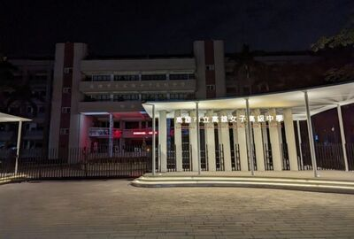

Kaohsiung Municipal Kaohsiung Girls' Senior High School,KGHS
高雄市立高雄女子高級中學
關於高雄女中
創校於西元1924年，高雄女中於日治時代校名為【高雄州立高等女學校】。創校伊始，對品格德行的陶冶，及忠誠淑世精神的要求，即樹立起雄女百年來的教育宗旨。1945年國府遷台，改名為【台灣省立高雄第一女子中學】，1964年，從初中與高中合制，改為三年制的完全高級中學，高雄市升格後於1979年改名為【高雄市立高雄女子高級中學】，延用至今。
春榮秋華，輪轉百年，自日治時期第一任「名和仁一」校長，直到新世紀現任的「鄭文儀」校長，已歷十八任校長掌舵校務。歷任校長皆秉持著無私的教育情操，一棒一棒戮力耕耘，傳遞德教。不論時移世變，歷經榮落物遷，始終堅守著忠、勤、嫻、淑的校訓精神，栽培呵護著每一位雄女人的成長。
愛河流經城市，粼粼波光畔岸處，是雄女知識傳授的殿堂。為國育才的貢獻，是首屈一指的著名學府，在升學實績上，也常領南臺灣第一志願風騷。作為普通科高級中等學校，全校都是女生，班級總數有63班，每年級各21班，全校學生人數約2250人。學生入學素質佳，升學表現優秀，歷年來應屆畢業生在各項大學入學考試成績斐然。學校具有專業師資、完整教學資源以及充足教學設備，歷任校長更是一時碩彥，領導學校成長茁壯，成為一流的菁英高中。
高雄女中創校至今，樹立學生誠實踏實的品質、敦促剛強健康的精神，更期勉每一個雄女人具備「忠、勤、嫻、淑」的精神，在多元且紮實的學識根基上創新精進，實踐理想，達到培養【活力、智慧、創造、卓越】的領袖人才之教育願景。
熊女
熊女100歲
校內近況
聖誕樹
去年為了增添聖誕節過節氣氛斥巨資購買，高雄女中特地找了已畢業的學姊設計了這顆以「雄女紅」為基底的聖誕樹，使用珍珠板加木板使其較為堅固，
雖然做工比較複雜，但是光是製作成本就需要7萬元，大部分人覺得太貴，對這棵樹的評價也很兩極。
校友：聖誕節後再也沒看過他
校友2：好像紅色火箭
盤子樹
大門
2022年底，高雄女中的第四代新校門完工。與上一代的紅磚牌樓不同，第四代的設計比較現代，新大門多了遮雨棚，也多了晚上的照明。
雄女校長鄭文儀回應，新校門不僅是校門，主要兼具實用性，夜晚打燈也會有不同風貌。
但是大家對新大門有不同看法，有些人覺得很有設計感，也有些人覺得新校門長得像候車亭。
其實比較像動物園大門
大食客：我看倒有點像綠豆糕

動物園大門